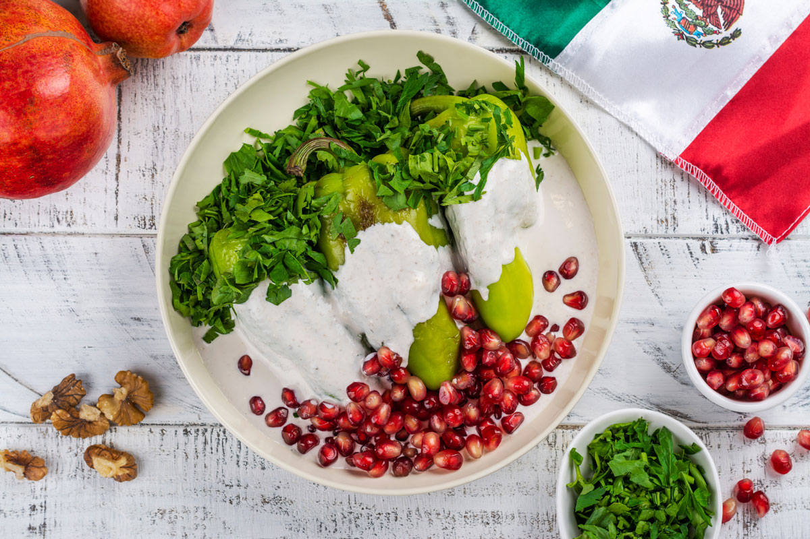

CHILES EN NOGADA

INGREDIENTS
- 6 poblano peppers
- 1 lb. ground pork or beef
- 1/2 onion, chopped
- 2 garlic cloves, minced
- 1/2 tsp. ground cinnamon
- 1/4 tsp. ground cloves
- 1/4 tsp. ground cumin
- 1/4 tsp. ground coriander
- 1/4 tsp. dried oregano
- 1/4 cup raisins
- 1/4 cup chopped almonds
- 1/4 cup chopped walnuts
- 1/4 cup chopped fresh parsley
- Salt and pepper, to taste
- 2 tbsp. vegetable oil
- 1 cup crumbled queso fresco (fresh Mexican cheese)
- 1 cup pomegranate seeds
- 1 cup heavy cream
- 1/4 cup chopped fresh cilantro
INSTRUCTIONS
- Preheat the oven to 400°F.
- Roast the poblano peppers on a baking sheet in the oven for about 20-25 minutes, until the skins are charred and blistered.
- Transfer the peppers to a plastic bag and seal the bag. Let the peppers steam for about 10 minutes, until the skins are loosened.
- Peel the skins off the peppers and cut a slit down the center of each pepper. Remove the seeds and veins.
- In a large skillet, heat the vegetable oil over medium-high heat. Add the ground meat and cook until browned, about 5-7 minutes.
- Add the onion, garlic, cinnamon, cloves, cumin, coriander, oregano, raisins, almonds, walnuts, parsley, salt, and pepper to the skillet. Cook for another 5-7 minutes, until the onion is translucent and the nuts are toasted.
- Stuff the peppers with the meat mixture and arrange them in a baking dish.
- In a separate saucepan, heat the heavy cream over low heat until warm. Pour the cream over the stuffed
peppers in the baking dish.
- Sprinkle the crumbled queso fresco and pomegranate seeds over the top of the peppers.
- Bake the peppers in the oven for about 20-25 minutes, until the cheese is melted and the filling is heated through.
- Garnish with chopped cilantro before serving.